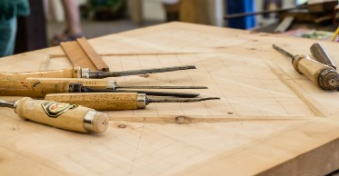

Non-Coding Activities That Boost Developer Skills

You can’t write code 24/7. In fact, you shouldn’t. If you find yourself pulling more and more all-nighters or marathon coding sessions then you are probably pushing subpar code. If you don’t take breaks to let your mind work on other things, or stop to consider the design decisions of your project then you won’t operate at your best. Your brain needs time for reflection, and to zone out. You need time to step back and examine big picture items.
The longer you go down a rabbit hole of writing line after line only prolongs the inevitable. You’ll burn out, get discouraged and lose focus. What’s worse, you might even make poor architecture decisions that only lead to more work in the long run.
Don’t give in to the culture of hyper-productivity by thinking the more you code the better you are. This is true if you’re learning a new language or trying to cement syntax fundamentals in your brain, but this stops working down the road. You need to take time to do other things. Write code and then reflect on that code, whether consciously or subconsciously.
In this article we’ll explore some activities you can use to not only take breaks from coding sessions, but also expand your abilities as a developer. On the surface some of these activities might seem simple but, they teach us important skills and sharpen our mind to become even better developers. Elements of problem solving, pattern recognition and patient craftsmanship are present in many common hobbies and activities. Let’s explore a few of these.
Playing video games
“You mean I can play video games and get smarter!?”
Photo by Alvaro Reyes on Unsplash
Sort of. I’m not talking about mindless first-person shooter games, though. I’m referring to strategy games, sandbox games, puzzle games, games that force you to plan, adapt, recognize patterns and problem solve. Managing resources, planing an attack or solving a puzzle all contribute to making you a sharper developer.
But how?
In these kinds of games you are forced to think ahead and to test strategies. You can build something, move it, build it again. You can allocate resources into different areas of research and see how it impacts the overall technology tree. All of these elements draw massive parallels to coding. When you develop an application you’re doing the same thing. You’re testing strategies and solving puzzles. The only difference is that there usually aren’t any fancy graphics associated with the work.
There are a staggering number of great games that exemplify these key developer elements. A few that I’ve enjoyed are listed below with some notes about why they’re so useful:
- Minecraft (design thinking, planning and systems architecture)
- Civilization V (critical thinking, planning and problem solving)
- Portal / Portal 2 (problem solving, pattern recognition)
Small electronics projects
When you learn the fundamentals of electronics and get your hands dirty with how circuits work you strengthen your understanding of systems. Systems are present everywhere, especially in software development. Working with an electrical network of hardware circuits and components is similar to working with a system of software. The core concepts remain the same with regards to efficient design and effective planning. Working with electronics teaches you to build better systems.
As you begin to layout a circuit and connect the components together you’ll build not only physical hardware engineering skills but technical design skills as well. These translate directly into your role as a developer and give you a different perspective on building complex systems. You’ll also be forced to work with a less forgiving physical medium. If you make a mistake you can’t just delete it and start over. With electronics you might accidentally destroy a component or be forced to de-solder an entire board and start from scratch.
If you haven’t worked with electronics before there is no better time to start than right now. There is a plethora of free educational material online and DIY kits are available for exceptionally low cost from multiple sources. Some fantastic resources to get started with are available below:
- Arduino (low-cost microcontroller kits and modules)
- Adafruit (basic to advanced DIY project kits and parts supplier)
Woodworking
Consistent with key fundamentals of planning, design and working with your hands, woodworking is also a great way to take a technology break. You get to work with a completely different medium, navigate new technical design challenges and you get to step away from tech completely. Components are not hidden away behind abstraction layers and interfaces. Wood is wood. If you make a mistake you see it immediately. Crafting wooden objects by hand requires careful attention to detail and teaches you a high degree of patience.
Photo by Dominik Scythe on Unsplash
The next time you’re complaining about waiting for some code to compile, imagine having to wait 8 hours for glue to set. This level of patience and attention to craftsmanship will translate readily into your engineering work when you return to it.
Check out Woodcraft for some great beginner woodworking guides and advice.
Drawing / Diagramming
Take a break and put pen to paper, marker to whiteboard or quill to parchment. Whatever drawing medium suits you, taking time to sketch out ideas or even just doodle will provide your brain with a much needed reset. Even if you think an idea is simple and you know all the pieces involved, there is a high probability drawing it out as a diagram or sketch will uncover hidden elements.
When you draw the components of an idea out on paper they start out as islands. As the idea is fleshed out you connect everything together visually and see how things might operate. Where dependencies might be missing, how a connection might not work as you had initially thought. This process slowly walks your brain through the architecture of an idea instead of flying straight into coding / problem-solving mode.
If pen and paper still isn’t your thing, you can always spend some “code-free” time with a visual diagramming application like Mermaid. Check out Making Diagrams Fun With Mermaid by Ozan Tunca for a superb guide.
Exercise
I can’t tell you how many ideas I’ve come up with and problems I’ve solved while out on a run. Zoning out while exercising might not seem like an effective way to come up with solutions, but it actually works quite well. Sometimes all it takes is focusing your attention away from the issue you’re trying to solve. If you keep hammering against the same thought process for too long you’ll just end up in a rut spinning your wheels. Escaping for a quick bout of physical activity frees your mind to wander and brings sub-conscious solutions to the foreground.
Photo by Fitsum Admasu on Unsplash
Aside from the obvious physical health benefits of exercise, there are many mental benefits. A sharper memory and ability to problem solve top the list of benefits for developers. I’ve personally noticed that I write more efficient code and produce less errors following a good workout. The workout doesn’t have to be peak intensity either, sometimes a short walk is all it takes to have that “Aha!” moment.
In an excellent piece, How Fitness Transformed Me into a Better Web Developer, Rachel Lum provides a detailed look into the ability for exercise to enhance a developer’s skills.